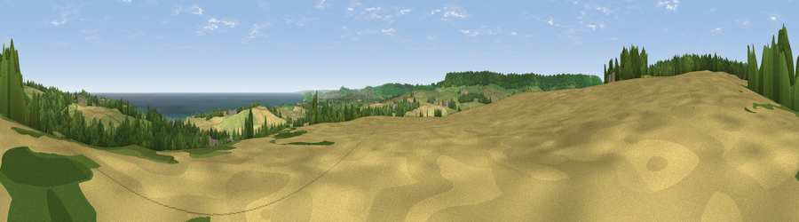

Viewpoint near Cloughton
#6533 in England · top 19% of its area beats it · near CloughtonWhere it is
The exact computed spot (TA 00275 94612). Click the marker for map links.
The view, rendered

A 360° render of this exact spot computed from the terrain model, tree cover and land cover — summer colours, afternoon light, calibrated against photographs of famous viewpoints. Real trees, hedges and buildings will differ in detail.
The panorama
Grey silhouette: terrain skyline in each direction (720 bearings, Earth curvature and refraction included). Dashed green: skyline with trees (+15 m) and buildings (+8 m) as obstacles. Blue strip: how far the ground is visible on each bearing.
Where the view opens
Wedge length = distance to the farthest visible ground on that bearing (vegetation-aware). Rings at 10, 25 and 50 km.
What fills the view
54% grassland · 23% woodland · 14% cropland · 7% water · 2% built-up
Angular shares of the visible panorama (visual magnitude), not map area. Landscape diversity 0.53 (0–1 Shannon).
Key numbers
More beautiful places nearby
The staircase of upgrades: each row has a higher view potential than everything closer. Driving times are estimates from straight-line distance, calibrated against real road routing — check an actual route before setting out.
| Place | Direction | Drive | Score |
|---|---|---|---|
| Viewpoint near Staintondale | N · 2 km | ~5 min | 80.4 |
| Viewpoint near Ravenscar | N · 6 km | ~14 min | 82.7 |
| Viewpoint near Ravenscar | NNW · 7 km | ~15 min | 87.3 |
| Viewpoint near Ravenscar | NNW · 9 km | ~17 min | 90.0 |
| Viewpoint near Easington | NW · 36 km | ~55 min | 90.2 |
| The Knoll | SSW · 432 km | ~407 min | 91.0 |
54.33722, -0.45924 · source: screening · position refined by local search. Computed location — check access rights before visiting.